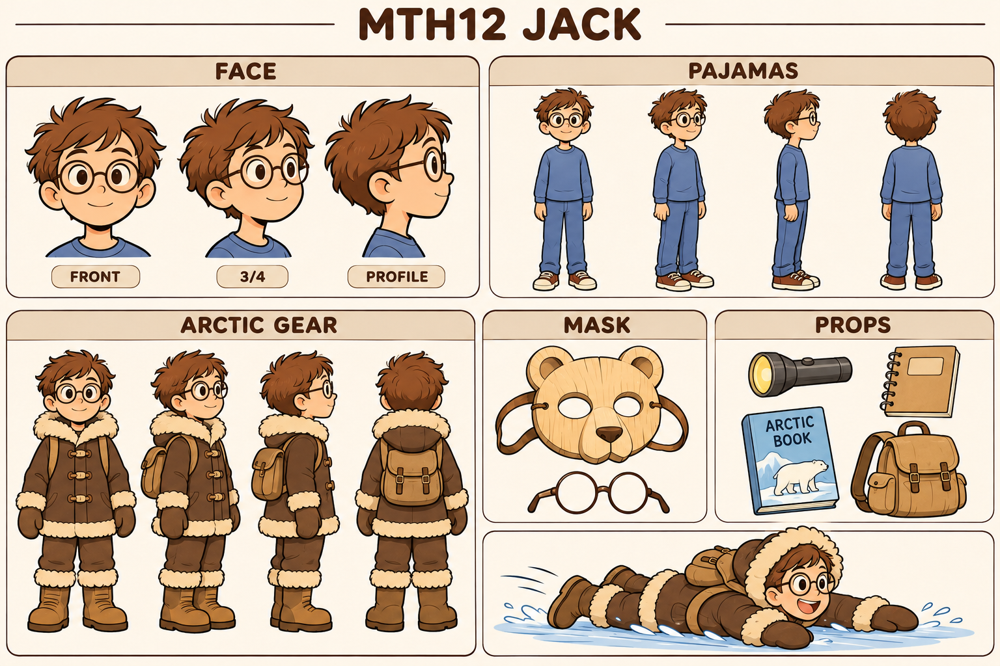
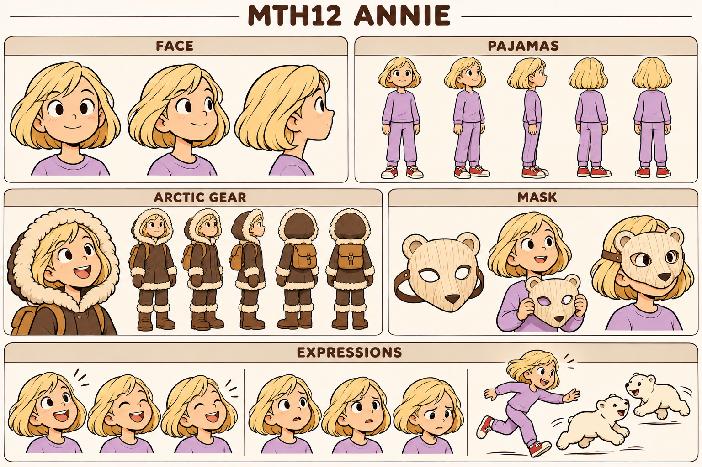
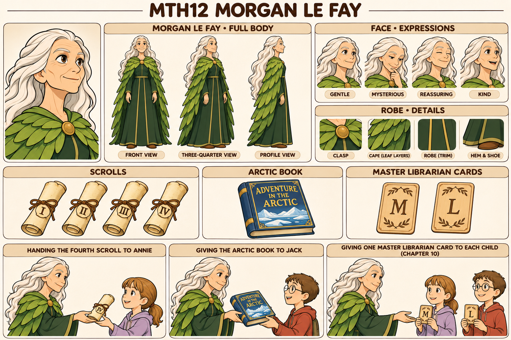
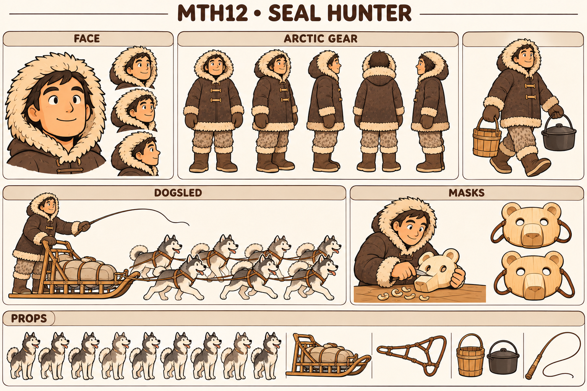
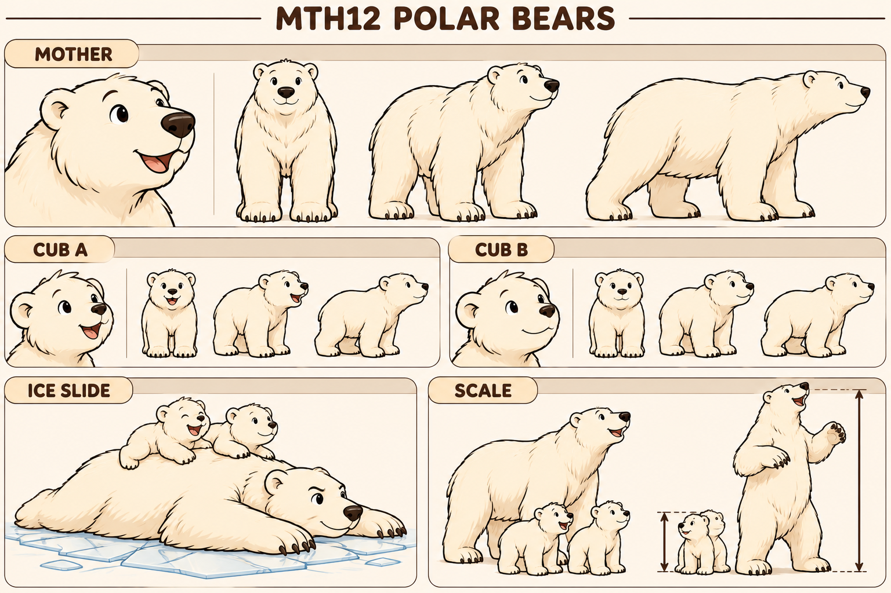

Jack

MTH-JACK
4권 얼굴·체형 참조 연결 / 12권 전용 이미지 생성 대기
원문: 잠옷을 입고 운동화를 신어 출발한다. 손전등·배낭·노트·책을 사용한다.
Polar Bears Past Bedtime · Magic Tree House #12
4권 캐릭터 원본 페이지의 얼굴·머리·체형과 그림체를 기준으로 합니다. 12권 의상·소품·등장 시점은 이 책의 원문이 우선합니다.
현재: 캐릭터별 서면 시트 8개 완료, 4권 실제 참조 이미지 2개 연결. 12권 전용 새 이미지 생성은 사용량 한도로 대기 중입니다.

MTH-JACK
4권 얼굴·체형 참조 연결 / 12권 전용 이미지 생성 대기
원문: 잠옷을 입고 운동화를 신어 출발한다. 손전등·배낭·노트·책을 사용한다.

MTH-ANNIE
4권 얼굴·체형 참조 연결 / 12권 전용 이미지 생성 대기
잠옷과 운동화를 입고 Jack과 함께 출발한다. 원문에 없는 낮의 외출복으로 바꾸지 않는다.

MTH-MORGAN
4권 Morgan 시트 참조 연결 / 12권 전용 이미지 생성 대기
1장: 긴 흰 머리의 마법 도서관 사서로 나무집에 등장한다. 네 번째 두루마리는 Annie에게, 북극 책은 Jack에게 준다.

MTH12-HUNTER
원문 기반 서면 시트 완료 / 신규 이미지 생성 대기
2장 마지막: 털로 둘러싸인 얼굴이 나무집 창에 보인다. 3장: 꿈에서 아이들을 보고 도우러 왔다고 말한다.

MTH12-OWL
원문 기반 서면 시트 완료 / 신규 이미지 생성 대기
1장: 흰 깃털과 큰 노란 눈. Jack의 창밖 나뭇가지에서 울고 아이들을 나무집으로 이끈다.

MTH12-BEAR-MOTHER
원문 기반 서면 시트 완료 / 신규 이미지 생성 대기
5장 마지막: 약 50피트 떨어진 눈언덕 위에서 나타나는 커다란 북극곰. 앞선 새끼곰 놀이 장면에는 없다.
MTH12-BEAR-CUBS
원문 기반 서면 시트 완료 / 신규 이미지 생성 대기
두 마리의 작고 통통한 새끼곰. 이름은 없다. 뛰고 구르고 술래잡기하고 눈언덕을 미끄러져 내려온다.
MTH12-HUSKIES
원문 기반 서면 시트 완료 / 신규 이미지 생성 대기
2장: 눈 속 어두운 형체·울음으로 먼저 등장하며 아이들이 늑대로 오해한다.
1~2장: 잠옷·운동화 → 3장: 파카·바지·부츠·장갑 순서 → 4~5장: 가면 보관·이동 → 6장: 가면 착용·Jack 안경 벗기 → 7장: Jack 가면 벗고 안경 착용 → 8장: 가면 반환 → 9장: 방한복 반환·잠옷과 맨발 → 10장: ML 카드.
가면은 나무 소품입니다. 아이들이 실제로 곰으로 변하거나 날개가 생기는 장면은 만들지 않습니다.